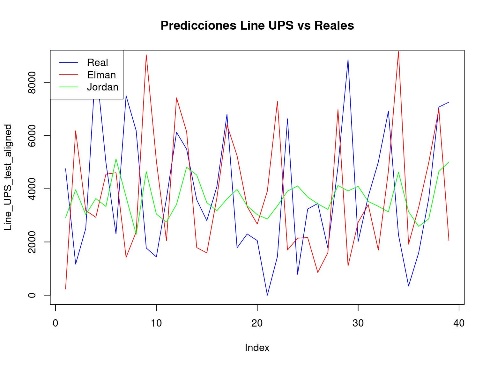
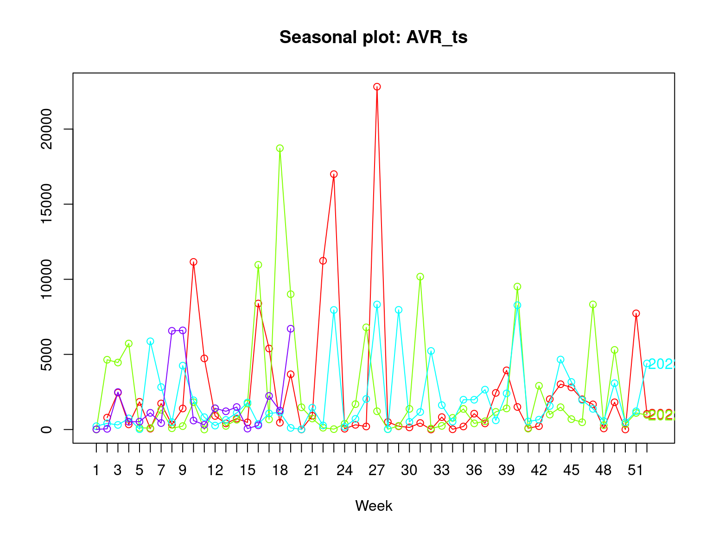
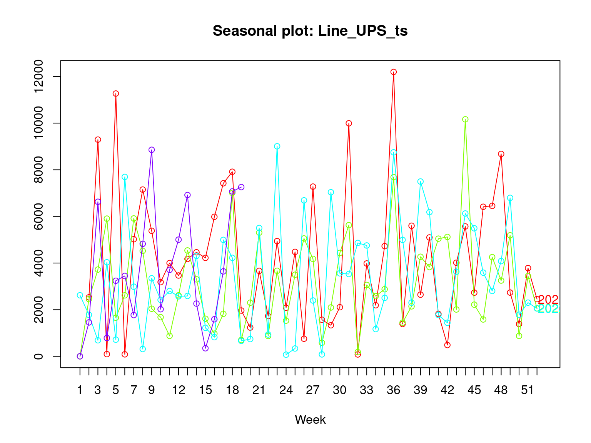
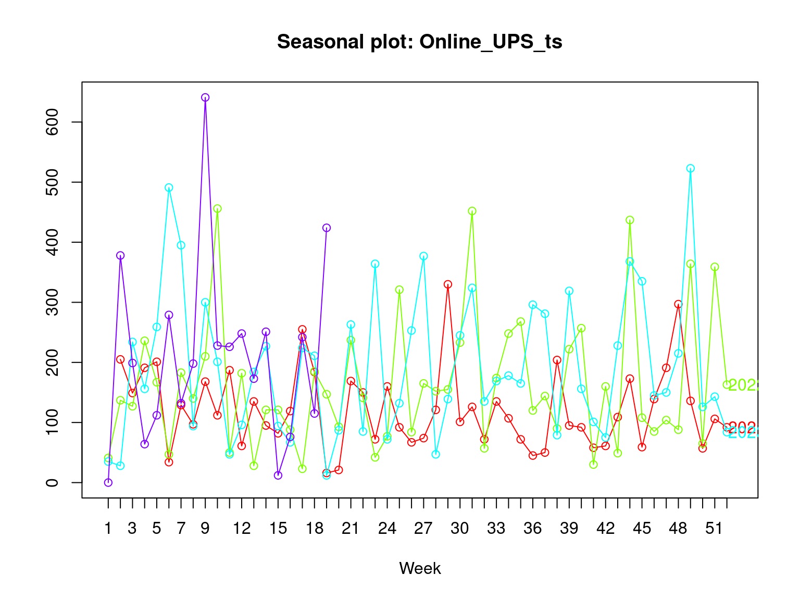

Actividad 2 - Estructura de los datos en series de tiempo
2.1 Entendimiento de los Datos
| Name | data |
| Number of rows | 174 |
| Number of columns | 81 |
| _______________________ | |
| Column type frequency: | |
| Date | 1 |
| numeric | 80 |
| ________________________ | |
| Group variables | None |
Variable type: Date
| skim_variable | n_missing | complete_rate | min | max | median | n_unique |
|---|---|---|---|---|---|---|
| Fecha | 0 | 1 | 2021-01-10 | 2024-05-01 | 2022-09-07 | 174 |
Variable type: numeric
| skim_variable | n_missing | complete_rate | mean | sd | p0 | p25 | p50 | p75 | p100 | hist |
|---|---|---|---|---|---|---|---|---|---|---|
| Item.1 | 0 | 1 | 1065.86 | 911.30 | -228 | 365.00 | 907.0 | 1497.50 | 4296 | ▇▇▂▁▁ |
| Item.2 | 0 | 1 | 1149.38 | 882.85 | -555 | 507.75 | 989.5 | 1794.00 | 4108 | ▅▇▅▁▁ |
| Item.3 | 0 | 1 | 903.09 | 748.48 | -704 | 346.00 | 720.0 | 1356.75 | 3692 | ▂▇▅▁▁ |
| Item.4 | 0 | 1 | 8.62 | 13.94 | -1 | 1.00 | 4.0 | 8.00 | 84 | ▇▁▁▁▁ |
| Item.5 | 0 | 1 | 25.08 | 26.91 | -57 | 6.00 | 17.5 | 40.75 | 136 | ▁▇▅▁▁ |
| Item.6 | 0 | 1 | 80.07 | 105.41 | -34 | 10.00 | 53.5 | 116.75 | 890 | ▇▁▁▁▁ |
| Item.7 | 0 | 1 | 7.28 | 8.84 | -6 | 2.00 | 5.0 | 10.00 | 59 | ▇▃▁▁▁ |
| Item.8 | 0 | 1 | 13.94 | 17.54 | -30 | 0.00 | 8.5 | 21.75 | 88 | ▁▇▂▁▁ |
| Item.9 | 0 | 1 | 46.70 | 82.55 | -190 | 3.00 | 28.0 | 69.75 | 819 | ▅▇▁▁▁ |
| Item.10 | 0 | 1 | 860.25 | 1405.21 | -3168 | 51.75 | 399.0 | 1081.50 | 7178 | ▁▇▂▁▁ |
| Item.11 | 0 | 1 | 348.18 | 577.07 | -650 | 0.00 | 110.0 | 458.50 | 3444 | ▇▅▁▁▁ |
| Item.12 | 0 | 1 | 16.09 | 17.85 | -11 | 4.00 | 10.0 | 22.75 | 93 | ▇▆▂▁▁ |
| Item.13 | 0 | 1 | 26.29 | 27.85 | -12 | 6.25 | 19.5 | 40.00 | 153 | ▇▅▁▁▁ |
| Item.14 | 0 | 1 | 9.62 | 11.57 | -3 | 1.00 | 5.0 | 14.00 | 64 | ▇▃▁▁▁ |
| Item.15 | 0 | 1 | 100.56 | 133.60 | -84 | 6.50 | 65.0 | 140.25 | 1010 | ▇▂▁▁▁ |
| Item.16 | 0 | 1 | 12.93 | 20.28 | -5 | 0.00 | 5.5 | 17.00 | 157 | ▇▁▁▁▁ |
| Item.17 | 0 | 1 | 41.16 | 62.97 | -3 | 0.00 | 21.5 | 54.50 | 522 | ▇▁▁▁▁ |
| Item.18 | 0 | 1 | 237.43 | 533.60 | -490 | 0.00 | 0.0 | 200.00 | 3152 | ▇▂▁▁▁ |
| Item.19 | 0 | 1 | 2.49 | 6.24 | -1 | 0.00 | 0.0 | 2.00 | 43 | ▇▁▁▁▁ |
| Item.20 | 0 | 1 | 6.53 | 9.17 | -1 | 0.00 | 3.5 | 9.75 | 57 | ▇▂▁▁▁ |
| Item.21 | 0 | 1 | 4.86 | 7.31 | -1 | 0.00 | 2.0 | 6.00 | 38 | ▇▂▁▁▁ |
| Item.22 | 0 | 1 | 66.84 | 104.69 | -8 | 3.00 | 30.0 | 80.75 | 715 | ▇▁▁▁▁ |
| Item.23 | 0 | 1 | 0.79 | 1.18 | 0 | 0.00 | 0.0 | 1.00 | 5 | ▇▁▁▁▁ |
| Item.24 | 0 | 1 | 281.24 | 382.34 | -487 | 0.00 | 140.0 | 410.00 | 1910 | ▁▇▂▁▁ |
| Item.25 | 0 | 1 | 1.57 | 6.47 | 0 | 0.00 | 0.0 | 0.00 | 72 | ▇▁▁▁▁ |
| Item.26 | 0 | 1 | 62.80 | 113.73 | -60 | 0.00 | 18.0 | 84.00 | 732 | ▇▂▁▁▁ |
| Item.27 | 0 | 1 | 0.21 | 0.62 | 0 | 0.00 | 0.0 | 0.00 | 5 | ▇▁▁▁▁ |
| Item.28 | 0 | 1 | 4.30 | 7.06 | -12 | 0.00 | 1.0 | 6.00 | 42 | ▁▇▁▁▁ |
| Item.29 | 0 | 1 | 1.25 | 3.50 | 0 | 0.00 | 0.0 | 0.00 | 22 | ▇▁▁▁▁ |
| Item.30 | 0 | 1 | 48.63 | 77.59 | -58 | 0.00 | 24.0 | 71.75 | 555 | ▇▃▁▁▁ |
| Item.31 | 0 | 1 | 6.34 | 16.04 | -6 | 0.00 | 0.0 | 5.00 | 140 | ▇▁▁▁▁ |
| Item.32 | 0 | 1 | 4.68 | 9.26 | -14 | 0.00 | 0.0 | 5.75 | 48 | ▁▇▁▁▁ |
| Item.33 | 0 | 1 | 0.55 | 1.13 | -3 | 0.00 | 0.0 | 1.00 | 7 | ▁▇▁▁▁ |
| Item.34 | 0 | 1 | 8.99 | 14.04 | -4 | 0.00 | 3.0 | 12.00 | 68 | ▇▂▁▁▁ |
| Item.35 | 0 | 1 | 6.49 | 20.64 | 0 | 0.00 | 0.0 | 0.00 | 136 | ▇▁▁▁▁ |
| Item.36 | 0 | 1 | 4.16 | 47.25 | 0 | 0.00 | 0.0 | 0.00 | 620 | ▇▁▁▁▁ |
| Item.37 | 0 | 1 | 11.34 | 50.80 | -40 | 0.00 | 0.0 | 0.00 | 494 | ▇▁▁▁▁ |
| Item.38 | 0 | 1 | 0.38 | 0.79 | -1 | 0.00 | 0.0 | 0.00 | 4 | ▇▂▁▁▁ |
| Item.39 | 0 | 1 | 76.52 | 93.82 | -64 | 5.00 | 48.0 | 109.75 | 520 | ▇▆▁▁▁ |
| Item.40 | 0 | 1 | 6.95 | 77.73 | 0 | 0.00 | 0.0 | 0.00 | 1006 | ▇▁▁▁▁ |
| Item.41 | 0 | 1 | 0.72 | 1.26 | 0 | 0.00 | 0.0 | 1.00 | 9 | ▇▂▁▁▁ |
| Item.42 | 0 | 1 | 10.11 | 21.67 | -30 | 0.00 | 0.0 | 10.00 | 113 | ▁▇▁▁▁ |
| Item.43 | 0 | 1 | 5.26 | 9.08 | -9 | 0.00 | 1.0 | 7.00 | 65 | ▇▃▁▁▁ |
| Item.44 | 0 | 1 | 0.11 | 0.34 | 0 | 0.00 | 0.0 | 0.00 | 2 | ▇▁▁▁▁ |
| Item.45 | 0 | 1 | 391.52 | 1377.21 | -1584 | 0.00 | 0.0 | 0.00 | 10116 | ▇▁▁▁▁ |
| Item.46 | 0 | 1 | 0.20 | 0.57 | 0 | 0.00 | 0.0 | 0.00 | 3 | ▇▁▁▁▁ |
| Item.47 | 0 | 1 | 102.07 | 444.05 | 0 | 0.00 | 0.0 | 0.00 | 5040 | ▇▁▁▁▁ |
| Item.48 | 0 | 1 | 21.63 | 63.82 | -56 | 0.00 | 0.0 | 0.00 | 540 | ▇▁▁▁▁ |
| Item.49 | 0 | 1 | 82.72 | 129.82 | -150 | 0.00 | 32.0 | 107.50 | 820 | ▇▅▂▁▁ |
| Item.50 | 0 | 1 | 0.54 | 1.02 | -1 | 0.00 | 0.0 | 1.00 | 6 | ▇▂▂▁▁ |
| Item.51 | 0 | 1 | 7.74 | 11.29 | -12 | 0.00 | 3.0 | 10.75 | 58 | ▇▆▂▁▁ |
| Item.52 | 0 | 1 | 0.79 | 4.00 | 0 | 0.00 | 0.0 | 0.00 | 40 | ▇▁▁▁▁ |
| Item.53 | 0 | 1 | 0.02 | 0.30 | 0 | 0.00 | 0.0 | 0.00 | 4 | ▇▁▁▁▁ |
| Item.54 | 0 | 1 | 98.39 | 409.43 | -520 | 0.00 | 0.0 | 0.00 | 4000 | ▇▁▁▁▁ |
| Item.55 | 0 | 1 | 100.78 | 431.29 | -384 | 0.00 | 0.0 | 0.00 | 4568 | ▇▁▁▁▁ |
| Item.56 | 0 | 1 | 0.03 | 0.20 | -1 | 0.00 | 0.0 | 0.00 | 1 | ▁▁▇▁▁ |
| Item.57 | 0 | 1 | 0.25 | 0.81 | 0 | 0.00 | 0.0 | 0.00 | 7 | ▇▁▁▁▁ |
| Item.58 | 0 | 1 | 0.09 | 0.42 | 0 | 0.00 | 0.0 | 0.00 | 4 | ▇▁▁▁▁ |
| Item.59 | 0 | 1 | 10.04 | 32.58 | -60 | 0.00 | 0.0 | 0.00 | 200 | ▁▇▁▁▁ |
| Item.60 | 0 | 1 | 1.60 | 3.71 | -3 | 0.00 | 0.0 | 2.00 | 33 | ▇▁▁▁▁ |
| Item.61 | 0 | 1 | 75.40 | 332.16 | -320 | 0.00 | 0.0 | 0.00 | 2840 | ▇▁▁▁▁ |
| Item.62 | 0 | 1 | 92.63 | 154.04 | -200 | 0.00 | 36.5 | 107.50 | 1008 | ▇▆▁▁▁ |
| Item.63 | 0 | 1 | 8.99 | 28.44 | -60 | 0.00 | 0.0 | 0.00 | 150 | ▁▇▁▁▁ |
| Item.64 | 0 | 1 | 2.52 | 16.36 | -1 | 0.00 | 0.0 | 0.00 | 200 | ▇▁▁▁▁ |
| Item.65 | 0 | 1 | 0.13 | 0.48 | 0 | 0.00 | 0.0 | 0.00 | 4 | ▇▁▁▁▁ |
| Item.66 | 0 | 1 | 168.28 | 623.05 | -1584 | 0.00 | 0.0 | 0.00 | 3588 | ▁▇▁▁▁ |
| Item.67 | 0 | 1 | 75.29 | 188.78 | -2 | 0.00 | 0.0 | 39.00 | 1200 | ▇▁▁▁▁ |
| Item.68 | 0 | 1 | 11.51 | 35.96 | -60 | 0.00 | 0.0 | 0.00 | 200 | ▁▇▁▁▁ |
| Item.69 | 0 | 1 | 1.48 | 8.92 | 0 | 0.00 | 0.0 | 0.00 | 96 | ▇▁▁▁▁ |
| Item.70 | 0 | 1 | 5.09 | 25.22 | 0 | 0.00 | 0.0 | 0.00 | 276 | ▇▁▁▁▁ |
| Item.71 | 0 | 1 | 27.82 | 91.13 | -192 | 0.00 | 0.0 | 0.00 | 500 | ▁▇▁▁▁ |
| Item.72 | 0 | 1 | 0.03 | 0.21 | 0 | 0.00 | 0.0 | 0.00 | 2 | ▇▁▁▁▁ |
| Item.73 | 0 | 1 | 0.28 | 0.90 | 0 | 0.00 | 0.0 | 0.00 | 7 | ▇▁▁▁▁ |
| Item.74 | 0 | 1 | 14.74 | 76.97 | -186 | 0.00 | 0.0 | 0.00 | 714 | ▁▇▁▁▁ |
| Item.75 | 0 | 1 | 20.29 | 66.69 | -144 | 0.00 | 0.0 | 0.00 | 360 | ▁▇▁▁▁ |
| Item.76 | 0 | 1 | 0.34 | 1.23 | 0 | 0.00 | 0.0 | 0.00 | 8 | ▇▁▁▁▁ |
| Item.77 | 0 | 1 | 0.02 | 0.18 | 0 | 0.00 | 0.0 | 0.00 | 2 | ▇▁▁▁▁ |
| Item.78 | 0 | 1 | 81.75 | 199.15 | -100 | 0.00 | 0.0 | 0.00 | 1200 | ▇▁▁▁▁ |
| Item.79 | 0 | 1 | 304.83 | 1165.39 | -1920 | 0.00 | 0.0 | 0.00 | 8920 | ▇▁▁▁▁ |
| Item.80 | 0 | 1 | 0.36 | 1.27 | 0 | 0.00 | 0.0 | 0.00 | 13 | ▇▁▁▁▁ |
Al analizar los estadísticos presentados se puede entender que:
- No existen registros faltantes dentro del data set
- Existen items con una gran cantidad de registros en 0, se debe pensar en agrupar items por categorías o características similares
- Dentro de la base de datos se encuentran registros negativos que obedecen a las devoluciones
2.2 Preparación de los Datos
Como se menciono anteriormente sera necesario realizar algunos procedimientos previos antes de comenzar a realizar analisis, dentro de los procedimientos sera necesario realizar una limpieza o imputacion de datos y crear agrupaciones por categorias de items.
Dentro del dataset se encuentran registros negativos que corresponden a devoluciones de productos, nos centraremos en las ventas por lo tanto estos datos seran imputados con ceros por ser considerados anomalos.
#Imputacion de datos negativos que corresponden a devoluciones
ventas = data
ventas[ventas < 0] = 0
head(ventas) Fecha Item.1 Item.2 Item.3 Item.4 Item.5 Item.6 Item.7 Item.8 Item.9
1 2021-01-10 884 716 548 1 4 50 4 7 52
2 2021-01-17 3150 3400 2166 0 14 55 18 40 70
3 2021-01-24 0 0 5 7 1 14 13 9 13
4 2021-01-31 4296 3596 2902 1 43 139 3 47 78
5 2021-02-07 0 0 0 0 0 25 0 0 17
6 2021-02-14 1336 2060 1396 9 40 60 0 0 34
Item.10 Item.11 Item.12 Item.13 Item.14 Item.15 Item.16 Item.17 Item.18
1 708 18 0 42 64 224 0 45 0
2 1788 352 5 0 8 166 34 131 0
3 0 136 0 88 0 15 60 36 0
4 400 328 10 40 10 91 20 35 0
5 0 128 0 34 0 27 0 0 0
6 792 4 13 44 16 73 0 0 0
Item.19 Item.20 Item.21 Item.22 Item.23 Item.24 Item.25 Item.26 Item.27
1 0 7 17 6 1 0 0 0 0
2 2 14 2 121 0 30 0 12 0
3 1 0 2 0 0 0 0 24 0
4 0 24 0 90 0 200 0 159 0
5 0 0 0 15 0 150 0 55 0
6 0 0 0 0 1 200 0 0 0
Item.28 Item.29 Item.30 Item.31 Item.32 Item.33 Item.34 Item.35 Item.36
1 0 0 0 21 6 0 5 0 0
2 0 0 3 0 0 0 34 0 0
3 0 0 9 0 2 1 9 0 0
4 0 0 91 0 0 2 26 0 0
5 0 0 0 0 0 0 1 38 0
6 4 0 0 0 0 1 32 0 0
Item.37 Item.38 Item.39 Item.40 Item.41 Item.42 Item.43 Item.44 Item.45
1 0 3 72 0 0 27 22 1 0
2 0 0 260 0 0 0 2 0 0
3 0 0 64 0 0 0 0 0 0
4 0 0 128 0 0 0 0 0 0
5 0 0 0 0 0 2 0 0 0
6 0 0 104 0 0 1 0 0 0
Item.46 Item.47 Item.48 Item.49 Item.50 Item.51 Item.52 Item.53 Item.54
1 0 0 0 0 5 0 0 0 0
2 0 0 0 140 0 0 0 0 0
3 0 0 0 100 0 2 0 0 0
4 0 0 0 240 1 6 0 0 0
5 0 0 0 0 0 0 0 0 0
6 0 1224 0 360 0 30 0 0 1840
Item.55 Item.56 Item.57 Item.58 Item.59 Item.60 Item.61 Item.62 Item.63
1 0 0 0 0 0 0 0 12 0
2 0 0 0 0 0 0 0 252 0
3 0 0 0 0 0 7 0 144 0
4 0 0 0 0 10 0 0 824 0
5 0 0 0 0 0 0 0 0 0
6 0 0 0 0 0 1 560 476 0
Item.64 Item.65 Item.66 Item.67 Item.68 Item.69 Item.70 Item.71 Item.72
1 0 0 0 0 0 0 0 0 0
2 0 2 0 0 0 0 0 0 0
3 0 0 0 190 0 0 0 0 0
4 0 0 0 1 0 0 0 0 0
5 0 0 0 999 0 0 0 0 0
6 0 0 0 368 0 0 0 0 0
Item.73 Item.74 Item.75 Item.76 Item.77 Item.78 Item.79 Item.80
1 2 0 0 0 0 0 0 0
2 0 0 0 6 0 0 0 2
3 0 0 0 0 0 220 0 0
4 0 0 0 0 0 1000 0 0
5 0 0 0 0 0 0 0 0
6 0 0 0 0 0 368 0 0
Para la agrupación de los datos se identificarán las categorías de los ítems
Grupo AVR: Los siguientes Items se identifican como AVR
| AVR | |||
|---|---|---|---|
| Item.10 | Item.26 | Item.30 | Item.45 |
| Item.49 | Item.55 | Item.62 | Item.66 |
| Item.79 |
AVR = ventas%>% select(`Fecha`, `Item.10`, `Item.26`, `Item.30`, `Item.39`, `Item.45`, `Item.49`,
`Item.55`, `Item.62`, `Item.66`, `Item.79`)
AVR = AVR%>% mutate(Total_AVR = rowSums(select(.,`Item.10`, `Item.26`, `Item.30`, `Item.39`, `Item.45`, `Item.49`,
`Item.55`, `Item.62`, `Item.66`, `Item.79`), na.rm = TRUE))Grupo Data Center: Dentro de la base de datos solo se identifica como Data Center el Item 53
| Data_Center |
|---|
| Item.53 |
Data_Center = ventas%>% select(`Fecha`, `Item.53`)
Data_Center = Data_Center%>% mutate(Total_Data_Center = rowSums(select(.,`Item.53`), na.rm = TRUE))Grupo Line UPS: Los siguientes Items son identificados como line UPS
| Line UPS | |||
|---|---|---|---|
| Item.1 | Item.2 | Item.3 | Item.6 |
| Item.9 | Item.15 | Item.59 | Item.63 |
| Item.68 | Item.70 | Item.71 | Item.75 |
Line_UPS = ventas%>% select(`Fecha`, `Item.1`, `Item.2`, `Item.3`, `Item.6`, `Item.9`,
`Item.15`, `Item.17`, `Item.22`, `Item.34`, `Item.48`,
`Item.51`, `Item.59`, `Item.63`, `Item.68`, `Item.70`,
`Item.71`, `Item.75`)
Line_UPS = Line_UPS%>% mutate(Total_Line_UPS = rowSums(select(.,`Item.1`, `Item.2`, `Item.3`, `Item.6`, `Item.9`,
`Item.15`, `Item.17`, `Item.22`, `Item.34`, `Item.48`,
`Item.51`, `Item.59`, `Item.63`, `Item.68`, `Item.70`,
`Item.71`, `Item.75`), na.rm = TRUE))Grupo Online UPS: Los siguientes Items son identificados como Online UPS
| Online UPS | |||
|---|---|---|---|
| Item.4 | Item.5 | Item.7 | Item.8 |
| Item.12 | Item.13 | Item.14 | Item.16 |
| Item.19 | Item.20 | Item.21 | Item.23 |
| Item.25 | Item.27 | Item.28 | Item.29 |
| Item.31 | Item.32 | Item.33 | Item.38 |
| Item.41 | Item.43 | Item.44 | Item.46 |
| Item.50 | Item.56 | Item.57 | Item.58 |
| Item.60 | Item.65 | Item.72 | Item.76 |
| Item.77 | Item.80 |
Online_UPS = ventas%>% select(`Fecha`, `Item.4`, `Item.5`, `Item.7`, `Item.8`, `Item.12`,
`Item.13`, `Item.14`, `Item.16`, `Item.19`, `Item.20`,
`Item.21`, `Item.23`, `Item.25`, `Item.27`, `Item.28`,
`Item.29`, `Item.31`, `Item.32`, `Item.33`, `Item.38`, `Item.41`,
`Item.43`, `Item.44`, `Item.46`, `Item.50`, `Item.56`, `Item.57`,
`Item.58`, `Item.60`, `Item.65`, `Item.72`, `Item.76`, `Item.77`,
`Item.80`)
Online_UPS = Online_UPS%>% mutate(Total_Online_UPS = rowSums(select(.,`Item.4`, `Item.5`, `Item.7`, `Item.8`, `Item.12`,`Item.13`, `Item.14`, `Item.16`, `Item.19`, `Item.20`,
`Item.21`, `Item.23`, `Item.25`, `Item.27`, `Item.28`,
`Item.29`, `Item.31`, `Item.32`, `Item.33`, `Item.38`, `Item.41`,
`Item.43`, `Item.44`, `Item.46`, `Item.50`, `Item.56`, `Item.57`,
`Item.58`, `Item.60`, `Item.65`, `Item.72`, `Item.76`, `Item.77`,
`Item.80`), na.rm = TRUE))Grupo Solar: Los siguientes Items son identificados como Solar
| Solar | |||
|---|---|---|---|
| Item.36 | Item.52 | Item.69 | Item.74 |
Solar = ventas%>% select(`Fecha`, `Item.36`, `Item.52`, `Item.69`, `Item.74`)
Solar = Solar%>% mutate(Total_Solar = rowSums(select(.,`Item.36`, `Item.52`, `Item.69`, `Item.74`), na.rm = TRUE))Grupo Storage Battery: Los siguientes Items son identificados como Storage Battery
| Storage Battery | |||
|---|---|---|---|
| Item.11 | Item.18 | Item.24 | Item.35 |
| Item.37 | Item.40 | Item.64 | Item.67 |
| Item.78 |
Storage_Battery = ventas%>% select(`Fecha`, `Item.11`, `Item.18`, `Item.24`, `Item.35`, `Item.37`,
`Item.40`, `Item.64`, `Item.67`, `Item.78`)
Storage_Battery = Storage_Battery%>% mutate(Total_Storage_Battery = rowSums(select(.,`Item.11`, `Item.18`, `Item.24`, `Item.35`, `Item.37`, `Item.40`, `Item.64`, `Item.67`, `Item.78`), na.rm = TRUE))Grupo Surge: Los siguientes Items son identificados como Surge
| Surge | ||
|---|---|---|
| Item.47 | Item.54 | Item.61 |
Surge = ventas%>% select(`Fecha`, `Item.47`, `Item.54`, `Item.61`)
Surge = Surge%>% mutate(Total_Surge = rowSums(select(.,`Item.47`, `Item.54`, `Item.61`), na.rm = TRUE))Grupo Accesories: Los siguientes Items son identificados como Accesories
| Accesories | |
|---|---|
| Item.42 | Item.73 |
Accesories = ventas%>% select(`Fecha`, `Item.42`, `Item.73`)
Accesories = Accesories%>% mutate(Total_Accesories = rowSums(select(.,`Item.42`, `Item.73`), na.rm = TRUE))datos_grupo = data.frame(
Fecha = data$Fecha,
AVR =AVR$Total_AVR,
Data_Center = Data_Center$Total_Data_Center,
Line_UPS = Line_UPS$Total_Line_UPS,
Online_UPS = Online_UPS$Total_Online_UPS,
Solar = Solar$Total_Solar,
Storage_Battery = Storage_Battery$Total_Storage_Battery,
Surge = Surge$Total_Surge,
Accesories = Accesories$Total_Accesories
)
head(datos_grupo) Fecha AVR Data_Center Line_UPS Online_UPS Solar Storage_Battery Surge
1 2021-01-10 792 0 2530 205 0 18 0
2 2021-01-17 2455 0 9293 149 0 382 0
3 2021-01-24 341 0 94 191 0 546 0
4 2021-01-31 1842 0 11269 201 0 1529 0
5 2021-02-07 55 0 85 34 0 1315 0
6 2021-02-14 1732 0 5021 129 0 940 3624
Accesories
1 29
2 0
3 0
4 0
5 2
6 1| Name | datos_grupo |
| Number of rows | 174 |
| Number of columns | 9 |
| _______________________ | |
| Column type frequency: | |
| Date | 1 |
| numeric | 8 |
| ________________________ | |
| Group variables | None |
Variable type: Date
| skim_variable | n_missing | complete_rate | min | max | median | n_unique |
|---|---|---|---|---|---|---|
| Fecha | 0 | 1 | 2021-01-10 | 2024-05-01 | 2022-09-07 | 174 |
Variable type: numeric
| skim_variable | n_missing | complete_rate | mean | sd | p0 | p25 | p50 | p75 | p100 | hist |
|---|---|---|---|---|---|---|---|---|---|---|
| AVR | 0 | 1 | 2266.04 | 3455.68 | 0 | 328.25 | 1049.0 | 2361.5 | 22821 | ▇▁▁▁▁ |
| Data_Center | 0 | 1 | 0.02 | 0.30 | 0 | 0.00 | 0.0 | 0.0 | 4 | ▇▁▁▁▁ |
| Line_UPS | 0 | 1 | 3596.87 | 2479.48 | 0 | 1770.00 | 3244.5 | 5016.5 | 12196 | ▇▇▅▁▁ |
| Online_UPS | 0 | 1 | 164.93 | 110.93 | 0 | 85.50 | 140.5 | 223.5 | 641 | ▇▇▂▁▁ |
| Solar | 0 | 1 | 22.23 | 90.20 | 0 | 0.00 | 0.0 | 2.0 | 749 | ▇▁▁▁▁ |
| Storage_Battery | 0 | 1 | 1061.67 | 1277.29 | 0 | 114.50 | 649.0 | 1492.0 | 6979 | ▇▂▁▁▁ |
| Surge | 0 | 1 | 280.69 | 1121.84 | 0 | 0.00 | 0.0 | 48.0 | 11880 | ▇▁▁▁▁ |
| Accesories | 0 | 1 | 10.56 | 21.61 | 0 | 0.00 | 0.0 | 10.0 | 113 | ▇▁▁▁▁ |
Después de realizar las respectivas agrupaciones encontramos que de la base de datos solo será posible trabajar con los grupos AVR, Line UPS, Online UPS y Storage battery, estos grupos presentan una suficiente cantidad de datos para realizar los respectivos análisis al trabajar con datos en el tiempo.
Los otros grupos presentan medianas en 0 lo cual indica que por lo menos el 50% de los datos son 0, por esta razón no serán tenidos en cuenta en este estudio.
2.3 Análisis de los datos en el tiempo
2.3.1 Media móviles
Las ventas de AVR muestran picos pronunciados en ciertos periodos, especialmente en 2021 y 2022. La variabilidad es alta, con ventas que alcanzan valores superiores a 20,000 en algunos momentos.
La media móvil de 7 periodos (roja) suaviza las fluctuaciones, mostrando una tendencia general estable con aumentos ocasionales.
# Convertir a serie de tiempo
AVR_ts <- ts(datos_grupo$AVR, start = c(2021, 2), frequency = 52)
# plot
autoplot(AVR_ts, series = "AVR" , color = "gray") + ylab("Ventas") + xlab("Semana")+
autolayer(ma(AVR_ts,7), series = "7-SMA", color = "red")+
ggtitle("Datos ventas AVR y Media Móvil 7 periodos")
Los datos de ventas de Line UPS tienen picos menos extremos que en AVR, con un máximo alrededor de 12,500. La serie es más constante.
La media móvil sigue una tendencia ligeramente descendente en 2021, estabilizándose después con fluctuaciones menos pronunciadas.
# Convertir a serie de tiempo
Line_UPS_ts <- ts(datos_grupo$Line_UPS, start = c(2021, 2), frequency = 52)
# plot
autoplot(Line_UPS_ts, series = "AVR" , color = "gray") + ylab("Ventas") + xlab("Semana")+
autolayer(ma(Line_UPS_ts,7), series = "7-SMA", color = "red")+
ggtitle("Datos ventas Line UPS y Media Móvil 7 periodos")
El gráfico de ventas de Online UPS muestra valores de ventas mucho menores en comparación con AVR y Line UPS, con picos que apenas superan los 600. La serie tiene fluctuaciones más regulares y moderadas.
La media móvil es más estable, aunque sigue algunas oscilaciones a lo largo del tiempo.
# Convertir a serie de tiempo
Online_UPS_ts <- ts(datos_grupo$Online_UPS, start = c(2021, 2), frequency = 52)
# plot
autoplot(Online_UPS_ts, series = "AVR" , color = "gray") + ylab("Ventas") + xlab("Semana")+
autolayer(ma(Online_UPS_ts,7), series = "7-SMA", color = "red")+
ggtitle("Datos ventas Online UPS y Media Móvil 7 periodos")
Se observan picos importantes de ventas de Storage Battery en 2023 y 2024, alcanzando más de 6,000 unidades.
La media móvil sigue los aumentos a partir de 2023, mostrando una tendencia al alza con mayor estabilidad hacia 2024.
# Convertir a serie de tiempo
Storage_Battery_ts <- ts(datos_grupo$Storage_Battery, start = c(2021, 2), frequency = 52)
# plot
autoplot(Storage_Battery_ts, series = "AVR" , color = "gray") + ylab("Ventas") + xlab("Semana")+
autolayer(ma(Storage_Battery_ts,7), series = "7-SMA", color = "red")+
ggtitle("Datos ventas Storage Battery y Media Móvil 7 periodos")
2.3.2 Rezagos
Los gráficos de los rezagos presentados a continuación no muestran una tendencia o una correlación claramente.
Particularmente en los grupos AVR y Storage Battery presentan acumulaciones de puntos en el punto 0 debido a que estos dos grupos particularmente tienen una mayor de registros en ceros.
Para los grupos Line UPS y Online UPS los datos presentan un comportamiento disperso.


# lag plot grafica de rezagos
lag.plot(Online_UPS_ts, 12, main = "Rezago Online UPS", do.lines = FALSE)
# lag plot grafica de rezagos
lag.plot(Storage_Battery_ts, 12, main = "Rezago Storage Battery", do.lines = FALSE)
2.3.3 Estacionalidad
Para los datos de AVR se observan comportamiento identificable con picos pronunciados entre las semanas 25 y 29 en 3 de los 4 años de estudio.

Para el grupo de items Line UPS se alcanza a identificar un comportamiento similar entre los datos mostrando un fenómeno de estacionalidad entre las semanas 35 y 37.

Para el grupo de items de Online UPS no se alcanza a identificar patrones marcados, los datos parecen presentar un fenómeno de aleatoriedad en los datos.

Para el grupo de items de Storage battery no se alcanza a identificar patrones marcados, los datos parecen presentar un fenómeno de aleatoriedad en los datos.